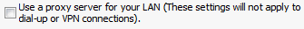

# $Id: //prod/main/sarf_centos/testlib/common/sikuli/ie.sikuli/ie.html#1 $ # $DateTime: 2019/03/22 01:36:06 $ # $Author: aminath $ import os import sys import sikulilog as log from sikuli.Sikuli import * iescriptPath = "ie.sikuli" addImagePath(iescriptPath) setAutoWaitTimeout(10) class Ie(object): def openIe(self): mark = log.get_length() App.open("iexplore") wait(2) click() wait(5) log.process(mark) def _openProxy(self): type("t", KEY_ALT) for i in range(0,17): type(Key.DOWN) wait(2) type(Key.ENTER) wait() click() wait() click() click() def _closeIe(self): click() wait(2) def setupProxyIe(self, proxyhost=None, port="3128"): mark = log.get_length() self._openProxy() type(Key.TAB) type(proxyhost) type(Key.TAB) type(port) wait(2) type(Key.ENTER) wait(2) type(Key.TAB) type(Key.ENTER) wait(2) self._closeIe() log.process(mark) def authenticateIe(self, domain="wga", username="admin", password="ironport", url="http://mail.google.com"): mark = log.get_length() App.open("iexplore") wait(5) type("t", KEY_CTRL) type(url) type(Key.ENTER) wait(, 120) type(, "%s\\%s" % (domain, username)) type(Key.TAB) type(password) click() wait(2) log.process(mark) def cleanupIe(self): mark = log.get_length() self._openProxy() type(Key.ENTER) wait(2) type(Key.TAB) wait(2) type(Key.ENTER) wait(2) self._closeIe() log.process(mark) if __name__ == "__main__": ie = Ie() ie.openIe() ie.setupProxyIe() ie.authenticateIe() ie.cleanupIe()